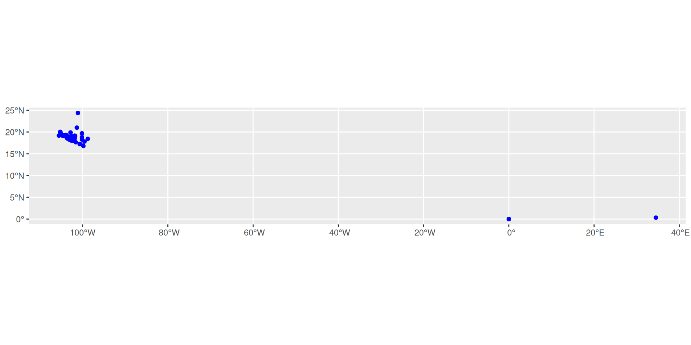
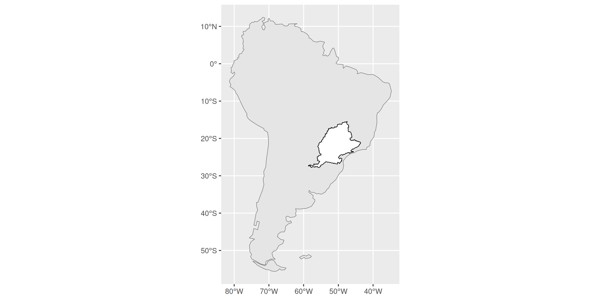
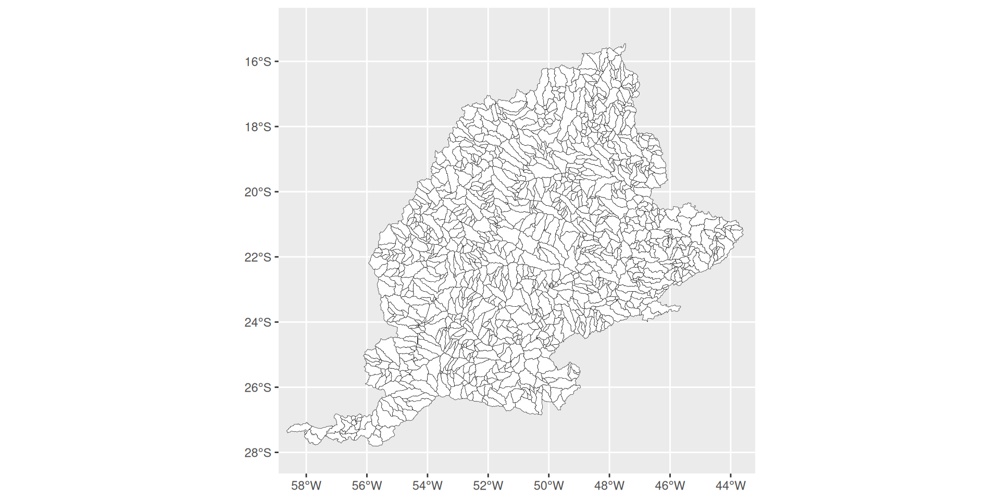
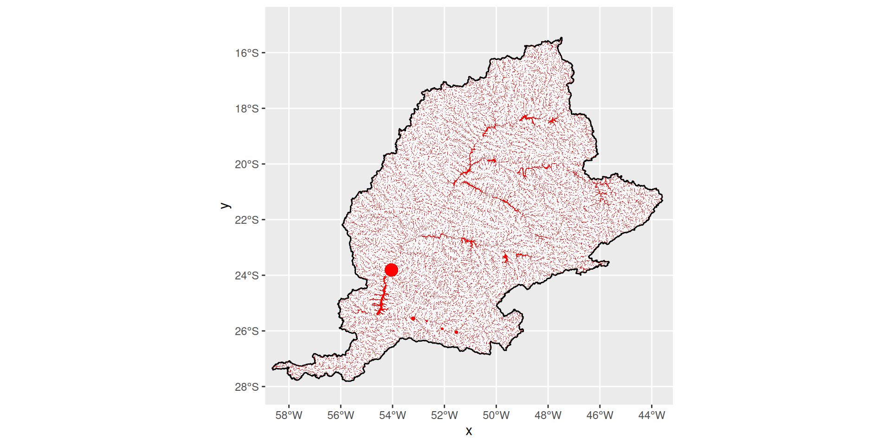
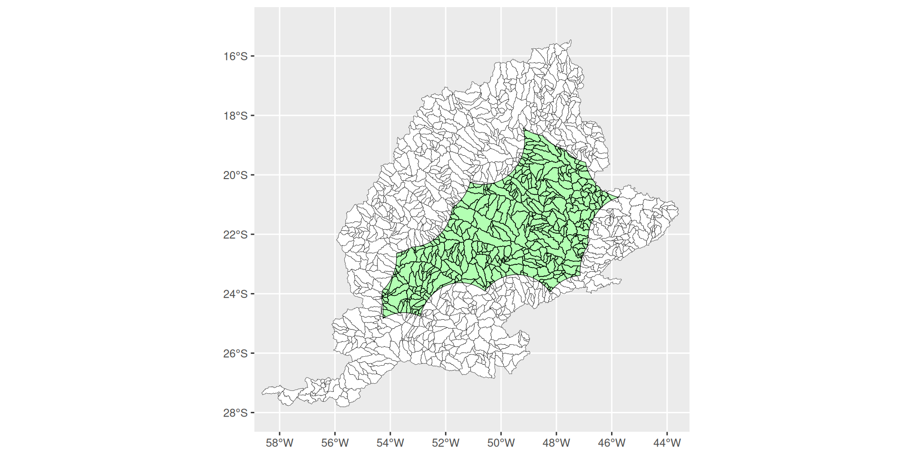
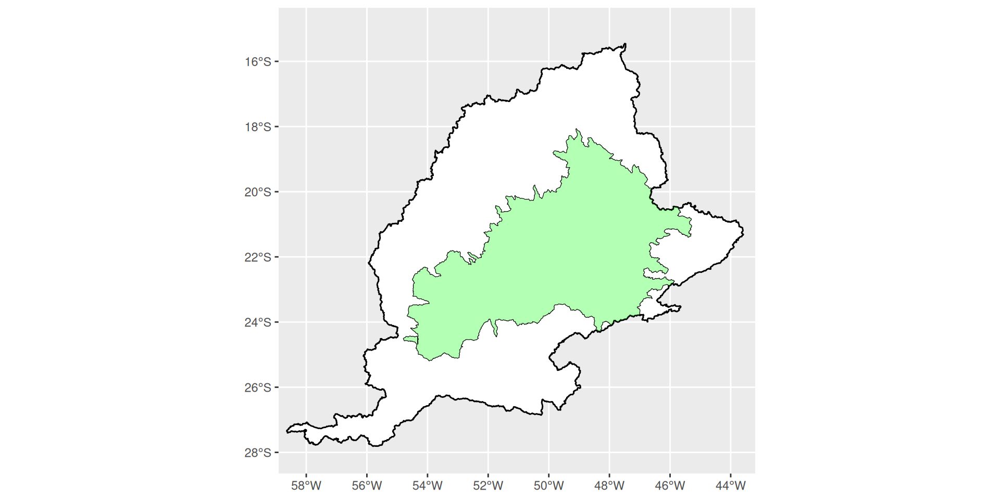
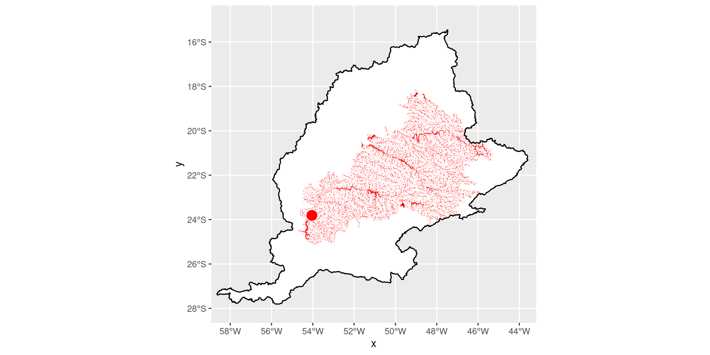

Distribuciones geográficas
Daniel Valencia, Juliana Herrera & Fabricio Villalobos
Área de distribución geográfica
“…el espacio donde las condiciones ecológicas favorecen, real o potencialmente y en varios niveles, las interacciones no efímeras de los individuos de una especie” Mota-Vargas & Rojas-Soto 2012
Puntos, polígonos y mapas de distribución
Los registros (colectas georreferenciadas) de las especies son los datos primarios de biodiversidad, a partir de los cuales podemos estimar las áreas de distribución de estas y describir/evaluar los patrones de diversidad que emergen de su agregación (traslape; e.g., gradiente geográfico de riqueza)
- En este ejemplo/ejercicio veremos cómo obtener dichos registros directamente desde R
- También, veremos cómo generar áreas de distribución (extensiones de presencia) a partir de estos registros, creando polígonos de diferentes tipos (mínimo, alpha y alpha dinámico)
- Los datos de registros serán obtenidos de la plataforma en línea Global Biodiversity Information Facility - GBIF
Paquetes necesarios:
Obteniendo registros de presencia de GBIF
Para comenzar podemos escoger una especie y aplicar la función occ_data
El objeto sp_data es una lista con datos sobre los resultados obtenidos en GBIF (incluyendo algunos metadatos)
Para trabajar únicamente con la tabla de registros hay que seleccionar el objeto data dentro del mismo
Checar el nombre de las columnas (para después buscar únicamente las de posición geográfica: lat/long)
[1] "key" "scientificName" "decimalLatitude"
[4] "decimalLongitude" "issues" "datasetKey"
[7] "publishingOrgKey" "installationKey" "hostingOrganizationKey"
[10] "publishingCountry" "protocol" "lastCrawled"
[13] "lastParsed" "crawlId" "projectId"
[16] "basisOfRecord" "individualCount" "occurrenceStatus"
[19] "sex" "taxonKey" "kingdomKey"
[22] "phylumKey" "classKey" "orderKey"
[25] "familyKey" "genusKey" "speciesKey"
[28] "acceptedTaxonKey" "acceptedScientificName" "kingdom" - Crear otro objeto a partir de sp_data únicamente con long/lat
- Quedarse únicamente con los puntos/registros individuales (i.e., excluir duplicados)
- Transformarlo en un objeto espacial
NOTA: el nombre de la variable puede ser diferente (e.g., “LATITUDE”, “Latidude”, “lat”, etc. Siempre hay que checar antes)
Graficar (poner en un mapa) los puntos de presencia de nuestra especie
Agregar el mapa del mundo para saber qué onda!
Hay algo claramente equivocado, ¿cierto? Los puntos/registros necesitan ser “curados” (limpiados)
Eliminar los puntos con mala georeferencia (en este caso, puntos obvios en el “viejo mundo”)
Ahora sí, mapeamos de nuevo pero sólamente en la región de interés (México)
Y ¿Cómo eliminamos los registros que están en el mar?
sp_p1<-sp_data%>%
dplyr::select(decimalLongitude,decimalLatitude,species)%>%
mutate(lat=decimalLatitude,lon=decimalLongitude)%>%
distinct() %>%
na.omit() %>%
st_as_sf(coords = c('decimalLongitude','decimalLatitude'),crs="EPSG: 4326")%>%
filter(lat> 0.5) %>%
filter(lat< 22)%>%
filter(lon> -105.56611)Verifiquemos nuevamente los registros en el mapa
Polígono mínimo convexo
Una vez tenemos los datos curados, podemos crear nuestro poligono mínimo convexo
¿Cómo se ve?
Polígono alfa (alpha hull)
Usamos el paquete alphahull
NOTA: Esta función solo acepta tablas como entrada
Error: shull: duplicate points found
Falla porque encuentra puntos duplicados o, como en este caso, puntos en una línea recta (i.e., mismo X y/o mismo Y).
¿Cómo podemos identificar y solucionar este error?
Ahora si, podemos crear el Alpha Hull con un valor de alpha escogido (por la razón que crean relevante)
Para observar el alpha hull, necesitamos que el objeto sea de tipo espacial del paquete sf. Para eso usaremos una función independiente, disponible en su carpeta de trabajo
¿Cómo se ve?
Polígono alfa dinámico
Usamos el paquete rangeBuilder, el cual crea un polígono alpha hull con un valor de alpha “óptimo” basado en la distribución espacial de los puntos
sp_range <- getDynamicAlphaHull(
sp_p3, #Tabla de puntos/registros de la especie
coordHeaders = c("decimalLongitude", "decimalLatitude"),# x y y
fraction = 0.95, # la fracción mínima de registros que debe incluir el polígono
partCount = 2, # el máximo de polígonos disyuntos permitidos
initialAlpha = 1, # Alpha inicial
alphaIncrement = 0.5,
alphaCap = 1000,
clipToCoast = "terrestrial" # solo la parte terrestre del polígono se mantendrá (se cortan las partes no-terrestres/acuáticas con base en un mapa descargado de naturalearth).
)Convertir el polígono alpha a un objeto sf
¿Y ….Cómo se ven todos los polígonos?
Finalmente, podemos salvar esos polígonos como shapefiles, para usarlos en otros software (e.g., QGIS) y eventualmente juntar los de varias especies para otros análisis (ejercicio siguiente)
Ajustes en los polígonos
Por ejemplo, para especies restringidas o dependientes de aguas continentales podemos implementar algunos ajustes luego de determinar su extensión de presencia
En este ejercicio, vamos a utilizar un pez dulceacuícola (Cyphocharax naegelii), que se distribuye en la cuenca alta del río Paraná
Entonces carguemos una base de datos con los registros de la especie ya limpios para la cuenca del alto Paraná
datos <- read_csv(file = here("data/polygons", "registros.csv")) %>%
dplyr::select("longitude", "latitude") %>%
mutate(longitude=ifelse(duplicated(longitude),longitude+rnorm(1,mean=0, sd=0.0001),longitude)) %>%
mutate(latitude=ifelse(duplicated(latitude),latitude+rnorm(1,mean=0, sd=0.0001),latitude))Y carguemos un shape de referencia para la cuenca del alto Paraná (https://www.hydrosheds.org/)
M <- st_read( here("data/polygons", "Cyphocharax_naegelii.shp")) %>%
st_transform(4326) %>% st_make_valid()Reading layer `Cyphocharax_naegelii' from data source
`/home/luisd/Dropbox/darcyDB/PDRF/R-biodiversidad-2025/data/polygons/Cyphocharax_naegelii.shp'
using driver `ESRI Shapefile'
Simple feature collection with 1 feature and 13 fields
Geometry type: POLYGON
Dimension: XY
Bounding box: xmin: -58.64583 ymin: -27.81307 xmax: -43.58333 ymax: -15.45417
Geodetic CRS: WGS 84Grafiquemos los registros y la cuenca
Veamos los registros distribuidos en la cuenca
ggplot()+
geom_sf(data=M, fill="white", linewidth= 0.5, colour="black")+
geom_sf(data=datos_sf, colour="blue", size=1)+
coord_sf(crs=st_crs(4326), xlim=c(-58.2, -43.9), ylim=c(-28,-15), expand=TRUE)+
labs(x="Longitud decimal", y="Latitud decimal",
title=expression(paste("Registros reportados ", italic("Cyphocharax naegelli"))))+
theme(plot.title=element_text(hjust=0.5))Como vamos a hacer dos tipos de ajustes, necesitamos algunos insumos complementarios:
- Otros shapes de cuencas, pero de menor orden (i.e., cuencas más pequeñas); en este caso, subcuencas nivel 8 (HydroSHEDS)
# Subcuencas nivel 8 (Hydrobasin)
cuencas <- st_read(here("data/polygons", "Basins_8.shp")) %>%
st_transform(4326) %>% st_make_valid()Reading layer `Basins_8' from data source
`/home/luisd/Dropbox/darcyDB/PDRF/R-biodiversidad-2025/data/polygons/Basins_8.shp'
using driver `ESRI Shapefile'
Simple feature collection with 1286 features and 31 fields
Geometry type: MULTIPOLYGON
Dimension: XY
Bounding box: xmin: -58.64583 ymin: -27.81307 xmax: -43.58333 ymax: -15.45417
Geodetic CRS: WGS 84Grafiquemos las subcuencas para tener una referencia visual
- Ráster de referencia que represente los cuerpos de agua (e.g., ríos, embalse)
Dado que solo necesitamos el ráster como una referencia, asignaremos un valor único para todos los píxeles diferentes de NA
¿Cómo se ve?
Teniendo los registros, capas de cuencas, y ráster de ríos, calculemos la extensión de presencia de la especie y luego ajustémoslo a las subcuencas, y a los cuerpos de agua
- Trazar el polígono (igual que en el primer ejercicio utilizando la función
ahull)
- Interceptar el polígono trazado con la capa de subcuencas (nivel 8; objeto cuencas)
- Rasterizar el polígono interceptado y cortarlo a los cuerpos de agua utilizando la capa ráster de los ríos del objeto mask
Construir el polígono alfa

Interceptar el polígono con las subcuencas
Seleccionar del objeto cuencas los ID interceptados para unir las subcuencas seleccionadas
Por último, utilizamos el polígono ajustado a las subcuencas (objeto range_union) y lo rasterizamos. Luego, lo cortamos a los ríos usando el ráster del objeto mask
Veamos la extensión de presencia ajustada a los ríos
Grafiquemos ambos resultados para tener una aproximación visual
unrestrict_range <-
ggplot()+
geom_sf(data=M, fill="white", linewidth= 0.5, colour="black")+
geom_sf(data=range_union,fill="green",linewidth=0.2,colour="black",alpha=0.3)+
coord_sf(crs=st_crs(4326), xlim=c(-58.2, -43.9), ylim=c(-28,-15), expand=TRUE)+
labs(x="Longitud decimal", y="Latitud decimal",
title=expression(paste("Sin restricciones a cuerpos de agua")))+
theme(plot.title=element_text(hjust=0.5))restrict_range <-
ggplot()+
geom_sf(data=M, fill="white", linewidth=0.5, colour="black")+
geom_raster(data = water_restric, aes(x=x, y=y), fill="red") +
coord_sf(crs=st_crs(4326), xlim=c(-58.2, -43.9), ylim=c(-28,-15), expand=TRUE)+
labs(x="Longitud decimal", y="",
title=expression(paste("Restringido a cuerpos de agua")))+
theme(plot.title=element_text(hjust=0.5))Grafiquemos todo el proceso para tener una visión general
dots <-
ggplot()+
geom_sf(data=M, fill="white", linewidth=0.3, colour="black")+
geom_sf(data=datos_sf, colour="black", size=0.7)+
coord_sf(crs=st_crs(4326), xlim=c(-58.2, -43.9), ylim=c(-28,-15), expand=TRUE)+
theme_void()
alpha_poly <-
ggplot()+
geom_sf(data=M, fill="white", linewidth=0.3, colour="black")+
geom_sf(data=naegelli_poly,fill="green",linewidth=0.2,colour="black",alpha=0.3)+
geom_sf(data=datos_sf, colour="black", size=1)+
coord_sf(crs=st_crs(4326), xlim=c(-58.2, -43.9), ylim=c(-28,-15), expand=TRUE)+
theme_void()
intercept_poly <-
ggplot()+
geom_sf(data=cuencas, fill="white", linewidth= 0.1, colour="black")+
geom_sf(data=intersect_poly$geometry,fill="green",linewidth=0.2,colour="black",alpha=0.3)+
coord_sf(crs=st_crs(4326), xlim=c(-58.2, -43.9), ylim=c(-28,-15), expand=TRUE)+
theme_void()
unrestrict_range <-
ggplot()+
geom_sf(data=M, fill="white", linewidth=0.3, colour="black")+
geom_sf(data=range_union,fill="green",linewidth=0.2,colour="black",alpha=0.3)+
coord_sf(crs=st_crs(4326), xlim=c(-58.2, -43.9), ylim=c(-28,-15), expand=TRUE)+
theme_void()
restrict_range <-
ggplot()+
geom_sf(data=M, fill="white", linewidth=0.3, colour="black")+
geom_raster(data=water_restric, aes(x=x, y=y), fill="red") +
coord_sf(crs=st_crs(4326), xlim=c(-58.2, -43.9), ylim=c(-28,-15), expand=TRUE)+
theme_void()